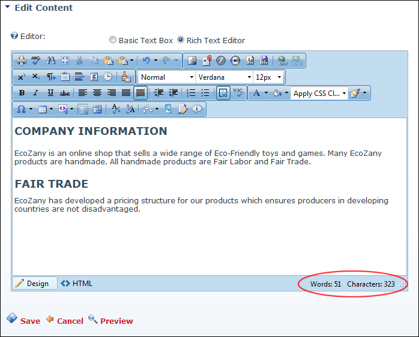
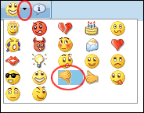

| Insert Symbol |
|
Option One: Click the Arrow  icon to open the symbol gallery and then select the required symbol to be inserted. icon to open the symbol gallery and then select the required symbol to be inserted.
Option Two: Click the Insert Symbol icon to insert the symbol that was inserted previously.
|
| Insert Table |
|
Click on the number of rows/columns to insert a basic table - OR - Select Table Wizard to design a more complex table. |
| Insert Code Snippet |
|
Click to insert a predefined code snippet. |
| Set Absolute Position |
|
Select the required image and then click the Set Absolute Position button. Drag the image to the required absolute position. |
| Image Map Editor |
|
Click to open the Image Map Editor where you can configure an image map for this image. |
| Convert to Lower Case |
|
Transforms selected text to lower case. |
| Convert to Upper Case |
|
Transforms selected text to upper case. |
| Module Manager |
|
Click the Arrow icon to access the drop down list and choose to enable or disable Statistics. Enabling Statistics displays the current number of words and characters inside the RadEditor in the bottom right corner of the Editor. These statistics are updated each time you click inside the editor following a edit.

|
| Toggle Full Screen Mode (F11) |

|
Select to toggle the Editor to/from full screen mode. |
| Track Changes |
|
Click to view the changes between your initial content and current content. Content changes are marked up with green background for new content and red strikethrough for deleted content. |
| Emoticons |

|
Insert Current Emoticon: Click on the Emoticons icon to insert the emoticon which is currently displayed on the button. Note: The last emoticon inserted during this editing session is displayed. The Angel Smile emoticon is displayed by default.
|
| |
|
Insert Different Emoticon: Click on the Arrow icon to select a different emoticon. This will insert the selected emoticon and set it as the default emoticon for this session.
 |
| About RadEditor |
|
Opens the About RadEditor window which has a link more information on the RadEditor. |